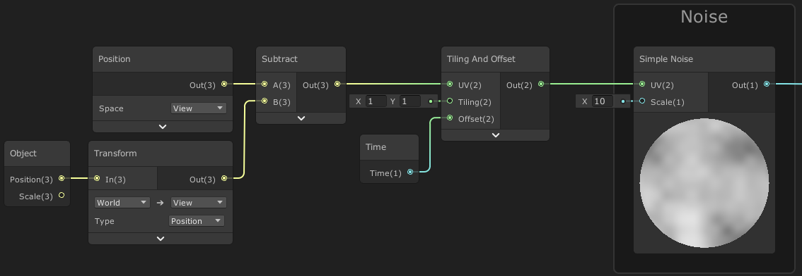

Dissolve Shader Breakdown
Intro
This shader effect uses noise and step functions to discard pixels (and for colouring edges) to create a dissolve effect. We can also have the dissolve based off other values, such as the fragment/pixel position to dissolve across the Y axis of the mesh for example. I’m also using a view space position based UVs to avoid seams in the noise.
(Note, this post focuses on the cube’s dissolve effect in the tweet above. For the character, an additional line-based noise/offset is used, as well as different colours, and remap values since the model is larger)
Notes
- This is an Unlit shader (but should work fine as Lit / PBR Master too). Note : If you’re using a Sprite Lit/Unlit Master, the alpha component is the 4th component of the Color input, unlike the other master nodes which use a Vector3 for the Color/Albedo input).
- Uses Opaque surface mode (and Alpha blending). We also want to set the AlphaClipThreshold to 0.5, as we want to discard pixels below this value for the dissolve effect.
- For the cube example in the tweet, the effect is also Two Sided, so that back faces are not culled.
Breakdown
In order to make a dissolve shader we first need a noise input, either generated through the use of the Simple Noise or Gradient Noise nodes, or sampled through a texture. Sampling from a texture can be better for performance, especially when targeting mobile platforms, but for this post I’ll be using generated noise.
We pass our noise output into a Step function, which outputs 0 or 1 based on whether the input value is smaller or bigger (or equal) than the Edge input. For this Edge input, we use a Vector1 property, named Amount here, (Be sure to set the Reference for the property to “_Amount” too). We can then control the property through a C# Script or Animation. (I won’t be going through that in this post though as I’d like to focus on the shader itself – Might do a “Setting properties from script/animation” post in the future, but for now if you are unfamiliar with it you’ll have to use google, sorry! – For setting them via C#, look into Material.SetFloat).
We can use this Step output as the Alpha input on our Master node. As long as our AlphaClipThreshold is larger than 0 (but smaller than 1, e.g. 0.5), we’ll now be discarding the black pixels shown in the Step preview. This is the basis of the dissolve shader, but it isn’t very interesting yet.
In order to add a glowing edge to the dissolve, we need to use another Step, but with a slightly offset Edge input (Amount Add a Vector1 “Edge Width” property, with a default value of 0.05). Then Subtract the Step with the bigger Edge value, from the other.
For the PBR Master node, we can now Multiply the output of the Subtract with a Color, and use that as the Emission input. We can then use the Albedo input for the base object colour, which could be a sampled texture for example.
However, for the Unlit Master node, since it only has a Color input we should use a Lerp so we can also have a base colour for the material. If you aren’t familiar with a Lerp : It linearly interpolates (blends) between two inputs, A and B, based on a third T input. When T=0 it outputs A, and when T=1 it outputs B. For any other input of T it will be an interpolation (blend) between the two inputs. In our case however the T input will only contain values of 0 and 1 exactly, so either output A or B. We could also instead use a Comparison and Branch node to achieve something similar.
The output of our Subtract is put into the T input on the Lerp node, and a Color for the dissolve edge into the B input. The A input is for the albedo/colour for the base material, e.g. a Sample Texture 2D output, perhaps tinted with an additional colour property.
In order to take the texture’s transparency/alpha into account, we also need to Multiply the Step (smaller edge, Amount input), with the A component from the Sample Texture 2D node before putting it into the Alpha input on the Master node.
(If you are using a Sprite Lit/Unlit Master node, you will want to sample the _MainTex texture, and tint with the Vertex Color node for it to correctly take the SpriteRenderer into account. Also note that it doesn’t have a dedicated alpha input, but it is included with the Color input as it is a Vector4, unlike the other master nodes which use a Vector3 for the Color/Albedo input. If you make sure all other Color nodes/properties have an alpha of 1, you can Multiply the Vector4 output by a Vector4 node set to (1,1,1, with the W input as the A component from the texture sample)).
Next to make our dissolve edge glow, we’ll want to be using a Bloom Post Processing effect and use HDR mode on the Color node, with the colour having an Intensity of 2 (and enabling HDR under the Lightweight/Universal Render Pipeline asset). If you aren’t familiar with how to set up post processing in URP, see here.
Dissolve based on Height / Y
While our dissolve effect is certainly more interesting with the glowing edge, it dissolves uniformly across the mesh. For certain dissolve effects, we might want the dissolve to follow the mesh’s height.
We can use the Position node and Split to obtain the Y/G value of the position, using Object space if we want the dissolve effect to stay fixed to that axis regardless of rotation & scale. If we want it fixed to the worldspace Y axis instead, we should use World space, but also make it relative to the object’s origin by subtracting the Position output of the Object node.
We’ll Add this onto the noise output, but first Multiply it by -1 (or use the Negate node), to make sure the dissolve effect starts with an Amount of 0 at the highest point rather than the lowest.
However, by adding these two things it shifts the range of the values. This will be a problem if we want to control the dissolve with the Amount property going only from 0 to 1. To fix this, we need to remap the values back into the 0-1 range before putting it into both our Step nodes (also using a Preview node in the image above, to organise the connections better).
This remap can be done via the Inverse Lerp node. (It can also be done with the Remap node, which uses the same maths as an Inverse Lerp directly into a Lerp. That’s more useful if you want to specify the output range other than 0-1 though).
For the A and B inputs on the Inverse Lerp, we need to specify the range of values our Subtract has. In order to do this I’m passing a Vector2 property in called MinMaxY. I currently have values of -0.6 and 1, which works well for a cube mesh with an Edge Width of 0.05.
We can do calculations to find the right MinMaxY values, but it can also be much easier to set the Amount to 0 and MinMaxY to (0, 1) in the material inspector. We can then adjust the X/Min until the object is fully visible, then change the Amount to 1 and adjust the Y/Max until it’s invisible.
(If you want to try and calculate it instead, you need to know the position and noise ranges, e.g. for the Cube it is in a range of -0.5 to 0.5 as the cube’s origin is in the center and it is one unit wide at a scale of (1,1,1). The noise is roughly in a 0 to 1 range, which is multiplied by 0.5. Therefore when adding together the range is (-0.5+0) to (0.5+1*0.5) = -0.5 to 1. It also needs a little extra on the X/Min value, as we have to account for the Edge Width).
View Position UVs
When using the model’s UVs it can cause some visible seams in the noise. This might be fine for some models and in some cases it might even be possible to hide any seams with particle effects depending on the use case.
Other options are to either use Triplanar Mapping (if sampling a noise texture), or use the Position node set to View space as the UV input (Since this is a Vector3, by connecting it to the UV input it will automatically be converted to a Vector2, using the RG/XY components). We can also use screen space coordinates, although that complicates things a bit more to achieve a very similar effect.
By using this View space UV method it is still a single Sample Texture 2D node (or Simple Noise in this case as I’m generating the noise). However, when the camera moves or rotates the noise will follow, like the UVs/texture is projected from the camera.
We can fix this a little by offsetting the View Position with the object’s origin (Position output from the Object node), transformed from World space to View space using the Transform node, like so :
Using this method will also mean every object shares the same set of noise however. I won’t be going through fixing this in detail – It’s better to just not use this dissolve shader for multiple objects on screen at the same time. However, if that’s not an option, you would want to look into having an additional Vector2 offset property which can be different per object. (Probably using the object’s start position or Object.GetInstanceID as a seed to generate a random offset, and set either by using an instanced material at runtime (material = GetComponent().material; will do this, be sure to cache & destroy it when the object is destroyed too! (OnDestroy)), and set via material.SetVector.
Thanks for reading! If you have any comments, questions or suggestions you can drop me a tweet or join my discord. If this post helped, consider sharing a link with others!
~ Cyan